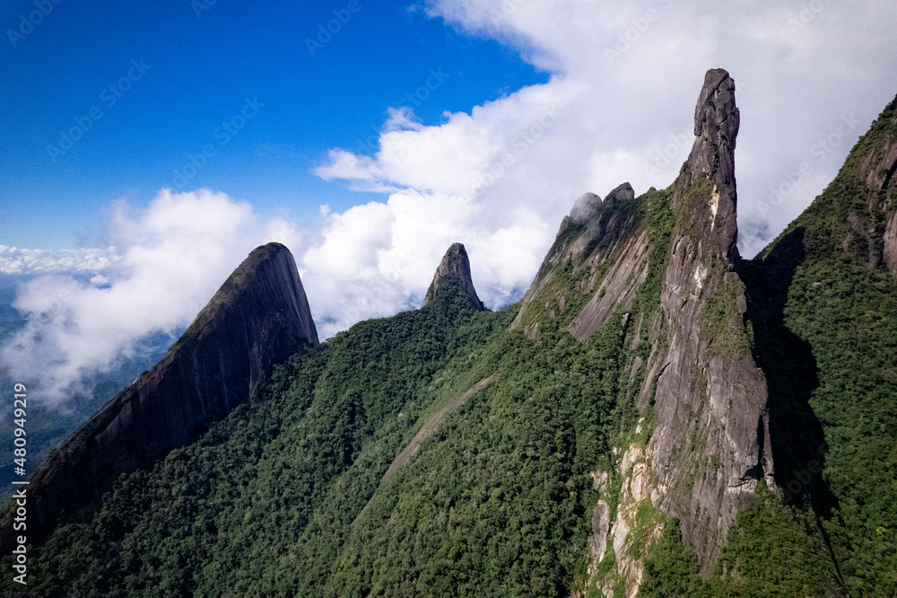

Dedo de Deus
O Dedo de Deus é o pico mais famoso da serra do Rio de Janeiro, visível especialmente dos municípios de Guapimirim e Teresópolis. Ele tem 1.692 metros de altitude e seu formato lembra uma mão apontando o dedo indicador para o céu — daí seu nome. É considerado o marco inicial da escalada no Brasil e um dos cartões-postais mais importantes do RJ, tanto que foi representado na bandeira do Estado.
O pico fica dentro do Parque Nacional da Serra dos Órgãos, uma unidade de conservação federal de proteção integral com 10,6 hectares, o equivalente a 5,9 mil campos de futebol. É cercado por outros picos bem conhecidos, como o Escalavrado, o Dedo de Nossa Senhora, a Cabeça de Peixe, o Capucho e o Nariz do Frade.
